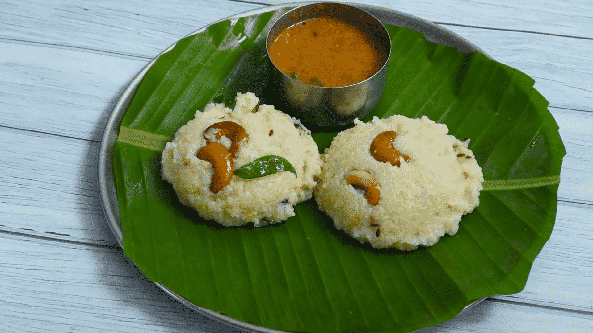

Pongal

Pongal (to be more accurate Ven Pongal aka Spicy Pongal is a traditional breakfast dish in Tamil Nadu, Southern state of India. Pongal is nutritious in its own right being made with Ghee (Clarified Butter), Pepper, Raw rice, etc.
It is slightly on the heavier side on the fat content, especially when compared with other options like Idli, Dosai, etc, people tend to consume Pongal occasionally.
Ingredients
- Raw Rice: 100 gms
- Ghee (Clarified Butter): 3 Tablespoons
- Pepper: 5 Pieces
- Green Chilli: 3 counts
- Moong Dal: 50 gms
- Chashew Nuts: 5 counts
- Curry Leaves: As required for tempering
- Jeera: As required for tempering
- Ginger: 1 Inch
Steps
Prep
- Wash Moon Dal and Raw Rice till the water runs clear and soak them together for 30 minutes.
- Cut Chillies length-wise and Fine chop Ginger
Cooking
- Keep pan on medium heat and add Ghee
- Once pan is heated, add Jeera, Curry Leaves, Cashew Nuts, Ginger, Pepper, Green Chilli (In the mentioned order).
- Once Ginger is cooked thoroghly, add Rice & Moong Dal together without the soaked water.
- Add 3 Cups of water and close the lid
- Let it cook for 15 mins and once water is completely cooked, stop the gas
- let it sit for 5 minutes.
- Add some more ghee and stir well.
- Serve the delicious Pongal with Coconut Chutney and Sambar
- Add some Vadai for goodwill.